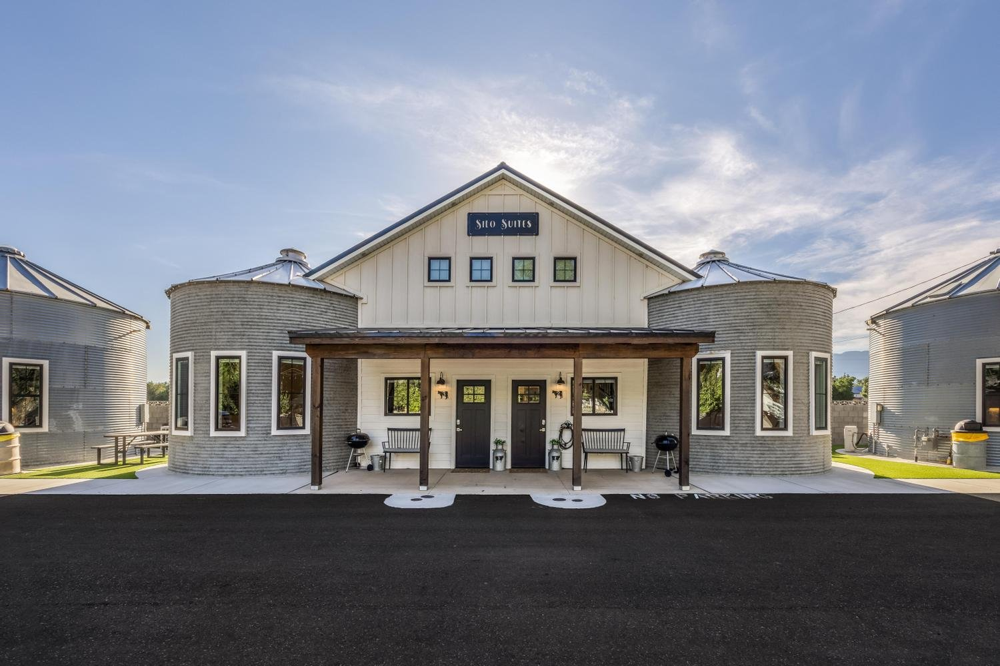
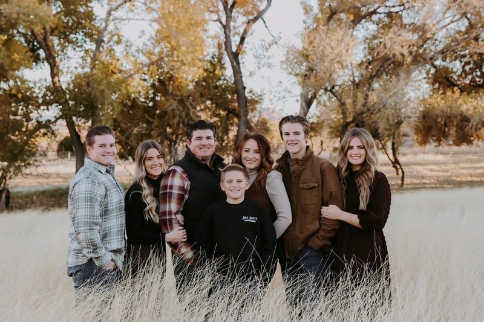
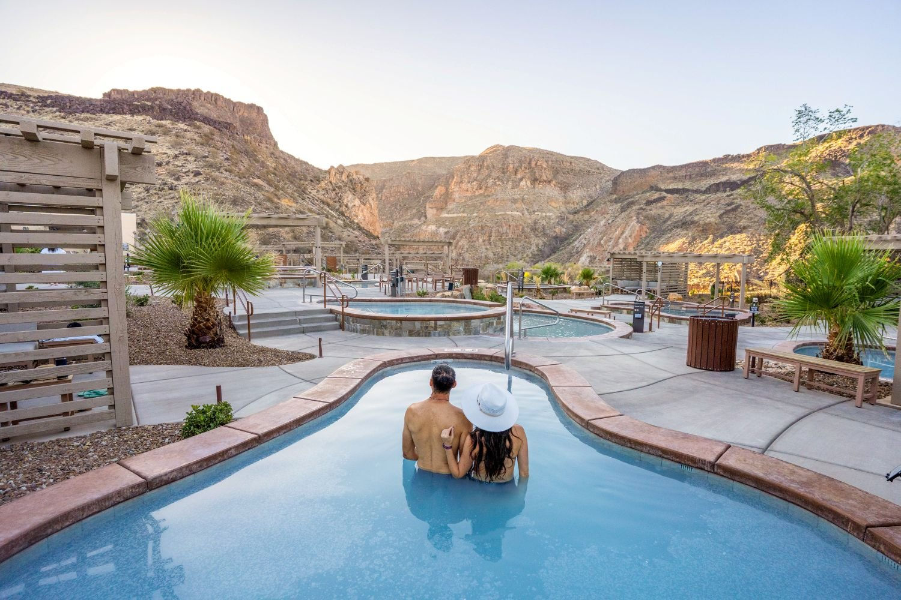

A boutique stay in La Verkin, Utah
A little history.
A lot of comfort.
Distinctive silo suites on a historic farm in La Verkin, Utah. Your comfortable base for exploring Southern Utah.

Welcome to Silo Suites
Somewhere different.
Somewhere to settle in.
Original silos. Thoughtful interiors. A family farm with a new chapter. Come home to a place with character after a day exploring Southern Utah.
Meet the family behind your stayFour silos. One dairy suite. Or all four together.
A space to call your own.
Planning a stay with a larger group? Explore the four silos together.
See the group stayFrom our guests
Good stays.
In their words.
Airbnb · Silo Suite 4
★★★★★
“Jaime’s Silo 4 was perfect and adorable! Decorated so well, very clean, and comfortable. Would definitely recommend!”
★★★★★
“Jamie communicated well, offered special discounts for area activities, and prepared a beautiful, comfortable living space for our relaxing girls weekend.”

The historic Church Dairy Farm
A family farm.
A personal welcome.
The historic Church Dairy Farm is part of our family's story. Today, we're sharing its next chapter through distinctive suites with original character and everyday comfort.
Come stay a while
Stay & soak
A little adventure.
A long, warm soak.
Stay at Silo Suites. Soak at Zion Canyon Hot Springs. Make time for both sides of a Southern Utah getaway.
Discover Stay & SoakZion Canyon Hot Springs / A regional experience
Make a day of it
Big days out.
A lovely place to come back to.


A few things to know
Before you
make yourself at home.
Where is Silo Suites?
You'll find us on the historic Church Dairy Farm in La Verkin, Utah, near Zion National Park. Visit your suite page for location information.
Which suite is right for our group?
Our individual suites accommodate up to 4 or 5 guests. Compare bedrooms, beds and amenities on the suite pages. For a larger gathering, explore the All Four Silos option and confirm its booking arrangements with us.
Where can I find check-in times and house rules?
Each suite page includes its own arrival information, amenities, house rules and cancellation terms. Review the details for your chosen suite before booking.
Can we include a visit to the hot springs?
Zion Canyon Hot Springs is a regional experience featured in our Stay & Soak guide. Visit that page for details, and confirm the current guest offer before purchasing.